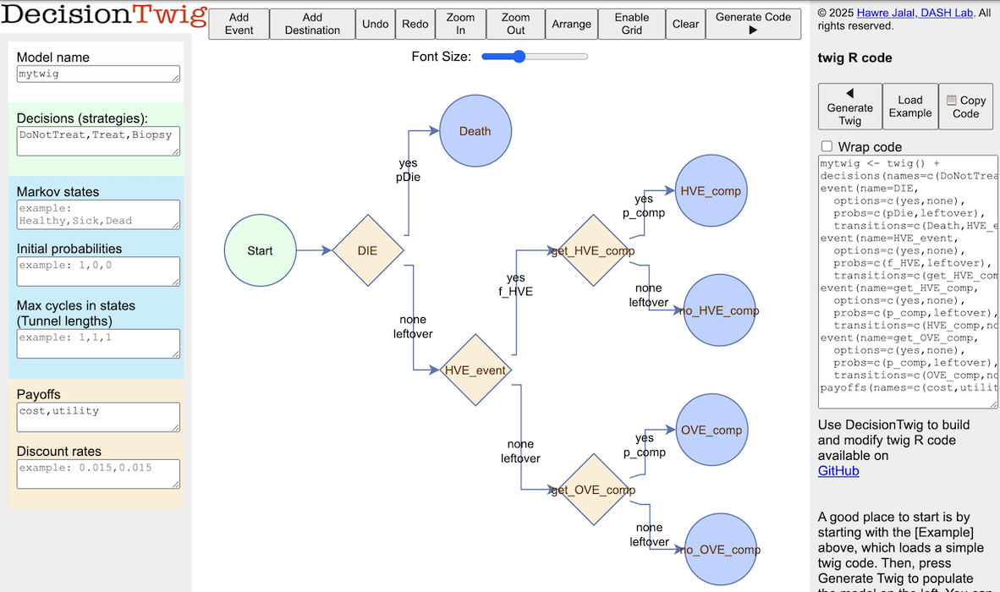

decision_tree.RmdThis is an example that we use to illustrate decision trees in our DARTH teaching materials. The example involves the treatment of herpes simplex ecncephalopathy (HVE) by either treating everyone without biopsy (Treat), not treating or taking biopsy (DoNotTreat), and Taking biopsy and treat if biopsy posivite (Biopsy).
We will first define the twig model and the parameters and then we will show how one would code the model direclty in R and compare the outcomes.
twig model definition
mytwig <- twig() +
decisions(names=c(DoNotTreat, Treat, Biopsy)) + # treatment options
event(name = DIE, # first event
options = c(yes, none), # either occurs or doesn't occur
probs = c(pDie, leftover), # occurs with prob pDie and doesn't occur with 1-pDie (leftover)
transitions = c(Death, HVE_event)) + # if it occurs, transitions to Death, otherwise the HVE_event
event(name = HVE_event, # similarly, HVE_event occurs with f_HVE but if not it will be OVE
options = c(yes, none),
probs = c(f_HVE, leftover),
transitions = c(get_HVE_comp, get_OVE_comp)) +
event(name = get_HVE_comp, # evaluate whether HVE complications occured
options = c(yes, none),
probs = c(p_comp, leftover),
transitions = c(HVE_comp, no_HVE_comp)) +
event(name = get_OVE_comp, # evaluate whether other viral encephalitis (OVE) complications occured
options = c(yes, none),
probs = c(p_comp, leftover),
transitions = c(OVE_comp, no_OVE_comp)) +
payoffs(names = c(cost, utility)) # finally measure the cost and utilities In DecisionTwig, this decision tree looks like this:  ## Model parameters Define a data frame for model parameters as a list of scalar values. This can also ve a dataset for running a probabilistic analysis.
params <- list(
# Probabilities,
p_HVE = 0.52 ,# prevalence of HVE
p_HVE_comp = 0.71 ,# complications with untreated HVE
p_OVE_comp = 0.01 ,# complications with untreated OVE
p_HVE_comp_tx = 0.36 ,# complications with treated HVE
p_OVE_comp_tx = 0.20 ,# complications with treated OVE
p_biopsy_death = 0.005 ,# probability of death due to biopsy
# Costs,
c_VE = 1200 ,# cost of viral encephalitis care without complications
c_VE_comp = 9000 ,# cost of viral encephalitis care with complications
c_tx = 9500 ,# cost of treatment
c_biopsy = 25000 ,# cost of brain biopsy
# QALYs,
q_VE = 20 ,# remaining QALYs for those without VE-related complications
q_VE_comp = 19 ,# remaining QALYs for those with VE-related complications
q_loss_biopsy = 0.01 ,# one-time QALY loss due to brain biopsy
q_death_biopsy = 0 # remaining QALYs for those who died during biopsy
)We only look into death from biopsy in this decision tree.
pDie <- function(decision, p_biopsy_death){
p_biopsy_death * (decision == "Biopsy")
}This depends on whether treatment received or not, HVE vs. OVE, and whether either HVE or OVE complications occured.
p_comp <- function(decision, HVE_event, p_HVE_comp, p_OVE_comp,
p_HVE_comp_tx, p_OVE_comp_tx) {
# complication of untreated HVE
p_HVE_comp * (decision == "DoNotTreat" & HVE_event=="yes") +
# complication of untreated OVE
p_OVE_comp * (decision %in% c("DoNotTreat", "Biopsy") & HVE_event=="none") +
# complications of treated HVE
p_HVE_comp_tx * (decision %in% c("Treat", "Biopsy") & HVE_event=="yes") +
# complications of treated OVE
p_OVE_comp_tx * (decision == "Treat" & HVE_event=="none")
}All event probabilities must be function names. So, we can just create a simple wrapper around the p_HVE variable.
f_HVE <- function(p_HVE){
p_HVE
}Cost is a function of the decision and the final model outcomes.
cost <- function(decision, outcome, c_biopsy, c_tx, c_VE_comp, c_VE){
# cost of biopsy
c_biopsy*(decision=="Biopsy") +
# cost of treatment if treated or biopsy was +ve for HVE
c_tx*(decision=="Treat" | (decision=="Biopsy" & outcome %in% c("HVE_comp", "no_HVE_comp"))) +
# cost of complication if outcomes are in either HVE or OVE complications
c_VE_comp*(outcome %in% c("HVE_comp", "OVE_comp")) +
# cost of viral encephalitis if complications didn't occur
c_VE*(outcome %in% c("no_HVE_comp", "no_OVE_comp"))
}Is a function of the decision and final outcome.
utility <- function(decision, outcome, q_loss_biopsy, q_VE_comp, q_VE){
# apply utility discount for biopsy
-q_loss_biopsy*(decision=="Biopsy") +
# apply utility values for complications
q_VE_comp*(outcome %in% c("HVE_comp", "OVE_comp")) +
# apply utility values if complications didn't occur
q_VE*(outcome %in% c("no_HVE_comp", "no_OVE_comp"))
}twig
We can run the model and check the results of the single parameter
set under results$Rewards_sim
results <- run_twig(twig_obj = mytwig, params = params, parallel = FALSE)
#> Checking Twig syntax ....
#> A states layer was not detected. Event transitions include the following event names: HVE_event, get_HVE_comp, get_OVE_comp . These are valid.
#> The following transitions are not event names and will be treated as final outcomes: Death, HVE_comp, no_HVE_comp, OVE_comp, no_OVE_comp .
#> Twig syntax validation completed successfully.
#> Preprocessing started ...
#> Preprocessing completed. Starting simulation...
#> | | | 0% | |==============================================================================================================================================================================================| 100%
#> Total time: 0.00081 secs
results$Rewards_sim
#> , , sim = 1
#>
#> reward
#> decision cost utility
#> DoNotTreat 4117.20 19.62600
#> Treat 12908.96 19.71680
#> Biopsy 32599.41 19.69896using the calculate_icers function adapted from the
dampack package, we can retrieve ICER table by passing the rewards
summary table.
calculate_icers(results$Rewards_summary)
#> decision cost utility inc_cost inc_utility ICER status
#> DoNotTreat DoNotTreat 4117.20 19.62600 NA NA NA ND
#> Treat Treat 12908.96 19.71680 8791.76 0.0908 96825.55 ND
#> Biopsy Biopsy 32599.41 19.69896 NA NA NA DThis example illustrated the following features of twig
* Decision tree * Multiple decisions * Multiple sequential events *
probability dependency on prior events * transition rewards * using
sequential computations * ICER
In addition, various intermediate objects and computations can be
returned by enabling verbose.